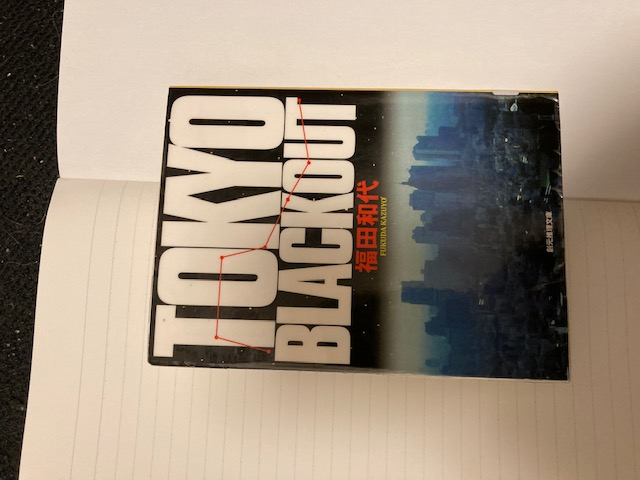
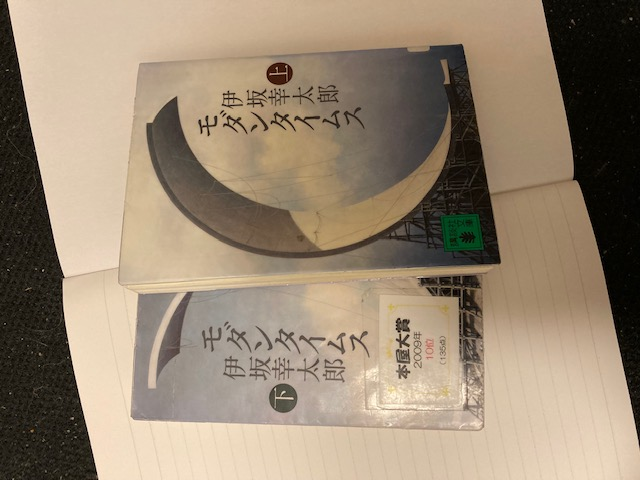
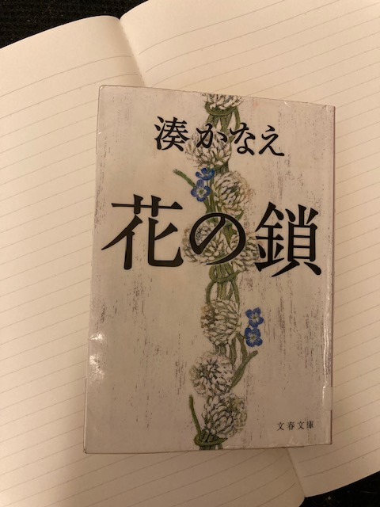

SARON
読書サロン
-

- TOKYO BLACKOUT
- 福田和代の長編第２弾、後々の作品と比べてやや荒削りな感じ。ただ、人物描写はうまいので引き込まれる。犯人の犯行動機や性格と 実際に行った犯行とのバランスがちょっとなーという感じ
2022 5 4
-

- モダンタイムス
- ご存知伊坂幸太郎の作品、あの「ゴールデンスランバー」と平行して書いていたというから、一番乗ってたときの作品かも、劇中で徴兵制 が普通に行われている日本が舞台というのが面白い。あと、妻から浮気の有無について拷問を受ける夫というのも奇抜な発想だと思った。 ただ、「ゴールデンスランバー」のほうが全然おもしろい。
2022 5 5
-

- 花の鎖
- 湊かなえの作品、世代のちがう３人の女性の話、最終的には３人が繋がるのだが、世代のちがいが良くわからなくてこんがらがる。読みやすい ことは読みやすい、ただしインパクトに欠ける。
2022 5 7